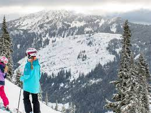
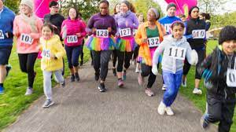
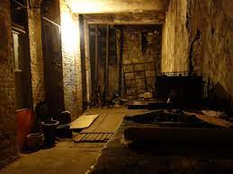

Sport & Outdoor Recreation
Stevens Pass Mountain Resort
Stevens Pass Mountain Resort, located in Washington State, USA, offers a variety of winter sports activities, including skiing and snowboarding, across a diverse terrain suitable for different skill levels.
Run For Good Racing Company
The Run for Good Racing Company is dedicated to organizing unique and accessible running and walking events in the Pacific Northwest, with a strong focus on charitable giving. Each event is designed to benefit a specific community organization, aligning with their mission to contribute positively to individuals' lives through promoting health, exercise, and community involvement in a fun manner.
Beneath the Streets
Beneath the Streets" could refer to a variety of topics depending on the context, including historical tours of underground city passages, novels, or even documentaries exploring what lies underneath urban landscapes. For instance, in Seattle, Washington, there's a famous tour called "Bill Speidel's Underground Tour"